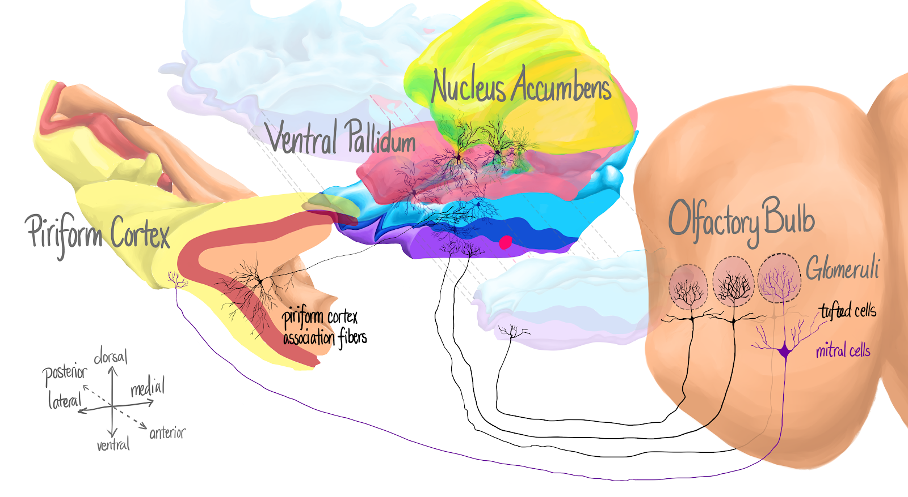

Neuronal Circuitry Underlying Hedonic Behavior
University of Florida College of Medicine
Department of Pharamacology and Therapeutics
Research Mentor: Daniel Wesson
My project within this lab focuses on determining neurons that are activated within the tubular striatum and the nucleus accumbens during hedonic tasks. This will further allow me to establish the circuitry between the basolateral amygdala and the ventral striatum. Before I can identify these neurons, mice complete a series of hedonic behavior tasks. Then, I perform immunohistochemistry on sections of the brain to probe for the neurons that were activated during testing. By discerning the identity of the neurons involved in hedonic tasks that led to the mouse’s behavior, there will be a deeper understanding of the process in which odors acquire hedonic value.
I have been involved in the Wesson Lab from September 2023 through present day and within the lab, my main responsibilities involve working with the mice's brains post behavioral tasks. I utilize the microtome to slice a brain into precise 40 micrometer sections spanning from the tubular striatum through the basolateral amygdala. I obtain over 75 sections per brain that are stored in well plates until they are transferred to microscope slides. I then work to delicately place the individual slices in rows on a slide for viewing under the microscope. In the near future, I will be using a technique called immunohistochemistry to probe for cFOS, an immediate early gene marker which will display the neurons that were activated during behavioral tasks.

Xiong A, Wesson, DW. (2016) An illustrated review of the ventral striatum's olfactory tubercle.
Chemical Senses; 41(7): 549-55.
Chemical Senses; 41(7): 549-55.